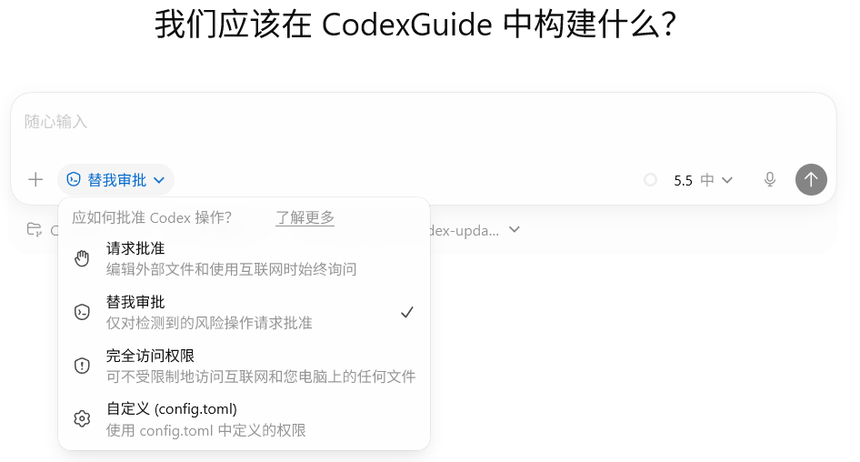

08 日常工作流
权限管理
这一节介绍 Codex App 里的权限选项。包括：
来源：CodexGuide 原文。原页面标注 MIT Licensed；原图与说明按页面内容保留。
权限管理
这一节介绍 Codex App 里的权限选项。包括：
- 聊天框下方的权限选择
- 设置里的“配置”项
权限管理和沙盒（Sandbox）本质上是同一个概念。想深入可以看 OpenAI 官方文档 或者 沙盒与审批 以了解更多。
💡 最后核对 官方资料最后核对日期：2026-06-15。本文参考 Codex app settings、Sandboxing、Permissions 与 Agent approvals & security。不同版本的界面具体名称、入口和可用选项会有所不同，请以你当前使用的客户端界面为准。
聊天框里的权限选项
权限入口在聊天框下方，官方叫它 permissions selector。四个常见选项：
Default permissions（默认权限）Auto-review（自动审核）Full access（完全访问）Custom (config.toml)（自定义配置）

对于 CLI 而言，权限配置的细粒度和复杂度都会更高。这里不做展开。
默认权限
又称：请求批准。
默认权限是 Codex 的安全基线。Codex 运行在沙盒（Sandbox）内，只能读写当前工作区（即你打开的文件夹）里的文件、运行常规本地命令。一旦操作超出该文件夹范围、访问网络，或调用更敏感的能力（如读取系统环境变量、操作已登录的 CLI），Codex 会暂停并请求确认——通过对话询问，或弹出审批窗口。
这个“沙盒”本质上是一道围栏，将 Codex 的活动范围限制在当前项目内，防止误触外部文件。
官方文档里，这套默认配置对应：
sandbox_mode = "workspace-write"approval_policy = "on-request"approvals_reviewer = "user"（即用户本人审批）。
适用场景：
- 修改文档、样式、测试或小范围代码。
- 安全性敏感的任务。
若任务步骤较多，频繁弹窗可能影响效率，此时可考虑切换至自动审核。
自动审核
又称：替我审批。
自动审核适合希望减少手动审批打断、但又不愿完全放开权限的场景。执行命令时，Codex 会将请求转给 reviewer agent（一个专门负责风险评估的助手）判断。低风险或中风险直接放行；高风险仍需要用户明确同意。
这是最推荐的权限机制。保证安全性的同时也能兼顾用户体验和工作效率。

适用场景：
- 项目经常需要访问当前文件夹以外的资源，如调用本机 CLI、联网查询，且风险可控。
- 本地开发任务步骤较多，不希望被频繁弹窗打断。
- 已信任当前项目目录，但仍希望拦截危险操作（如删除文件、修改配置、泄露凭据）。
完全访问权限
只在明确需要时临时开启。官方将 Full access 对应到 sandbox_mode = "danger-full-access" 和 approval_policy = "never"：沙盒限制被完全移除，Codex 不再触发审批弹窗，直接执行任何它打算执行的命令。
这是最高权限机制，务必考虑可能带来的风险。
适用场景：
- 调试特殊本机环境、Computer Use 或系统级操作。
- 任务必须高频访问工作区外的本机资源。
- 操作范围清晰，且项目有 Git 或备份机制可回滚。
自定义配置
选择 Custom (config.toml)，Codex 会按本地 config.toml 中的设置工作。例如同时开放多个可写目录、给特定网络域名放行、将审批交给自动审核，或通过 rules 对某些命令前缀设置“允许 / 询问 / 禁止”标识。
属于进阶配置，适合已熟悉沙盒和权限机制、希望按个人习惯定制权限边界的用户。
| 选项 | 大致含义 | App 里怎么理解 |
|---|---|---|
sandbox_mode = "read-only" |
只读。可以检查文件，但编辑文件或运行命令需要审批 | 适合只看代码、做审查、先问方案 |
sandbox_mode = "workspace-write" |
允许在当前工作区内读写并运行常规本地命令 | 默认权限的主要工作边界 |
sandbox_mode = "danger-full-access" |
移除本地沙盒限制 | 完全访问权限，高风险 |
approval_policy = "on-request" |
默认在沙盒内工作，越过边界时请求审批 | 默认权限下常见的审批方式 |
approval_policy = "never" |
不请求审批 | 完全访问权限的一部分，风险最高 |
approvals_reviewer = "user" |
审批提示交给用户 | 默认权限 |
approvals_reviewer = "auto_review" |
符合条件的审批请求交给 reviewer agent | 自动审核 / 替我审批 |
sandbox_workspace_write.writable_roots |
给 workspace-write 增加可写目录 |
需要跨目录时，优先考虑 |

上表仅展示部分常见配置选项，更多请查看OpenAI Premission。
推荐
- 新项目建议先使用默认权限，观察 Codex 在该模式下的行为。
- 日常修文档、补测试、改小功能，默认权限通常够用。
- 任务步骤多、审批频繁时，切换至自动审核。它是最通用的选项，也可以一开始就选。
- 只有明确知道默认权限的卡点时，再临时切换至完全访问权限。
- 长期习惯固定后，再用
Custom (config.toml)将沙盒、审批、网络和 writable roots 固化为固定配置。 - 不确定某个操作是否会执行？ 先让 Codex 说明其准备运行的命令、修改的文件，以及访问的外部资源，再决定是否继续。
最后提醒：删除文件、数据库迁移、发布、支付、修改权限、访问凭据、操作生产服务——这些场景必须由用户亲自把关。权限机制仅是约束，并非保险。特别是在“完全访问权限”下，Codex 一旦误判，可能产生预期外的破坏性操作。
注意
- 权限越高，任务范围应越小。
- 自动审核会消耗额外模型调用，也可能因超出额度限制、超时或失败而拒绝执行。
- 浏览器、MCP、Computer Use、App 连接器和外部服务通常还有独立的权限控制，不完全由沙盒模式控制。